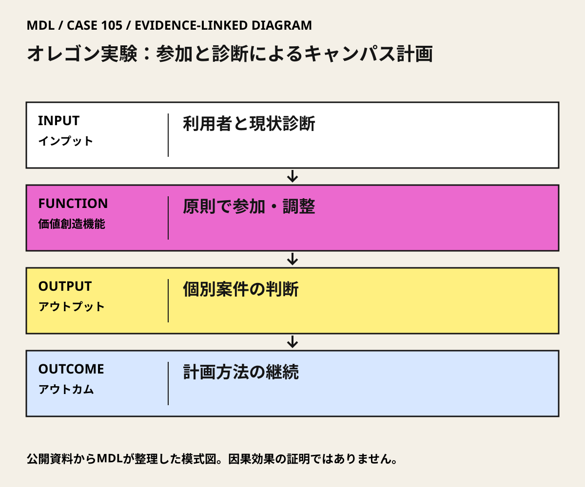

I / INPUT
何を持ち込んでいるか。
活動の出発点となる資源と課題を分けて整理します。「自社」は、その場・制度を運営する組織を指します。
II / VALUE CREATION FUNCTIONS
資源を、どう価値へ変えるか。
以下は既存の8ステップへの編集上の対応づけです。各取り組みの公式な工程名や、全工程を自前で担うことを意味しません。
III / OUTPUT
直接、何が生まれたか。
試作品、データ、契約、標準、育成した人材など、活動から直接生まれたもの。
1975年の共著The Oregon Experiment。
公開資料で確認出典 1原則と参加手続を記載したCampus Plan 2025版。
IV / OUTCOME
その結果、何が変わったか。
実際の利用、行動、業務、事業、地域の変化。報告された変化と、当該活動に帰属できる効果は区別します。
2025年版でもThe Oregon Experimentを計画の基礎と明記。参加・診断・調整が制度に残る。
制度継続による満足度、費用、環境性能の因果改善は本版では未確認。
公開資料では未確認
PROJECT IN FOCUS / 具体的な事例
オレゴン実験：参加と診断によるキャンパス計画
確認できた段階：参加型キャンパス計画の方法と継続的な制度運用 調査確認日 2026-10-06
誰の課題を、どう扱ったか
生まれたもの
1975年の共著The Oregon Experiment。
評価の限界：大学の制度的継続は確認できるが、全建物がAlexanderの設計であること、すべての利用者が対等な議決権を持つこと、常に小規模事業だけを行うことを意味しない。時間・参加コストと非参加者の扱いを別に検証する。
DESIGN BACKWARDS FROM IMPLEMENTATION
社会実装から逆算して、
何を先に整えているか。
実証の先にある導入・運用・継続から、この事例の設計を読み解きます。原典で確認できる仕組みと、MDLの設計解釈・他地域へ応用するための提案を区別して読んでください。「提案」「未実施」と記す内容は、当地で実施済みの工夫ではありません。仕組みの存在と、全案件で成果が出たことも別に扱います。
MORE DETAIL / 運営・根拠・応用
運営の全体像と、学びを深める資料。
費用負担、公表値、応用条件、写真・動画、原典を続けて確認できます。
01どう動かしているのか。
固定した完成図の再現ではなく、共通の原則・パタンを用いて個別案件を診断し、利用者の意見と全体調整を接続する。現行計画は利用者グループ、委員会の審査・勧告、大学の承認を別段階として扱う。
意思決定と本人の関与：現行計画ではCampus Planning Committeeは学長に勧告し、学長が承認・修正する。利用者の参加は設計への入力・検討の権限であり、最終予算・計画承認権と同一ではない。 Christopher AlexanderはMurray Silverstein、Shlomo Angel、Sara Ishikawa、Denny Abramsとの共著・方法構築に関与。現行計画を単独で運営する人物ではない。
- 共通原則から将来を考える
- 利用者を設計過程へ入れる
- 診断を継続判断へつなぐ
- 方法を文献と制度に残す
02誰が負担し、誰が担うか。
個別事業の責任者が資金確保を担う手順を大学計画が記載。全案件共通の財源比率、計画運営費、参加費用は未確認。
制度やプログラムの財源と、各参加企業・地域に発生する費用は同じではありません。公開範囲を超える案件別予算・契約条件は未確認です。
03確認できたこと。
1975年の共著The Oregon Experiment。
読み取れる範囲：大学の制度的継続は確認できるが、全建物がAlexanderの設計であること、すべての利用者が対等な議決権を持つこと、常に小規模事業だけを行うことを意味しない。時間・参加コストと非参加者の扱いを別に検証する。
原典で確かめる ↗ 出典の説明 ↓04日本で活かすなら。
参加イベントだけを移すのでなく、診断、案件の優先順位、承認者、予算、利用後の再評価を一つの流れにする。学校・病院・公共施設でも、各施設の規制と責任体系へ翻訳する必要がある。
05そのまま真似できないこと。
大学の制度的継続は確認できるが、全建物がAlexanderの設計であること、すべての利用者が対等な議決権を持つこと、常に小規模事業だけを行うことを意味しない。時間・参加コストと非参加者の扱いを別に検証する。
06次に、何を確かめるか。
提案・未実施：提案・未実施：一つの施設群で、現状維持・一括更新・参加型の段階的改修を比較する。小改修一件で利用者の要求、原則、採否理由を記録し90日後に再診断する。
担い手：施設部門が改善と維持の責任、利用者グループが要求整理、予算権者が継続可否を決定。
測るもの：利用の困難、提案採用理由、決定までの時間、参加の偏り、施工・維持費を測る。
継続：利用改善と全体整合が成立し、判断理由を利用者へ説明できる。
修正：時間・費用が膨らむか、非参加者の必要が抜けるなら会議・代表・改修単位を変更。
停止：責任者・資金・安全条件が確保できない案件は拡張しない。
07写真・図と原資料で確かめる。
現場の写真を見る ↑
DIAGRAM: モビリティデザインラボ · 根拠資料 ↗
図の説明
公開資料に基づく模式図。利用者と現状診断 → 原則で参加・調整 → 個別案件の判断 → 計画方法の継続。実景や地理的配置を示さない。
2026-10-06 · MDL作成の説明図。第三者の写真・図面の複製ではありません。
冒頭写真：オレゴン大学のメモリアル・クアッドから北側の校舎を望む
原資料で、当時の調査・実践を読む ↗08原典を読む。
The Oregon Experimentを基礎とする現行計画、参加と空間の継続
本文公開・英語。2026-10-06確認。
Campus Plan: Principle 1 — Process and Participation ↗
参加主体、Project Sponsorの資金確保、委員会勧告と学長承認、診断
Principle 1章の15ページPDF全文公開・英語。URL名は2026だが本文の版表記は2025。全巻SharePointの到達性とは区別。2026-10-06確認。
The Oregon Experiment — official book introduction ↗
共著者、方法の六原則、原著への入口
著者組織の公式書籍紹介公開・英語。原著全文の無料公開ではない。2026-10-06確認。